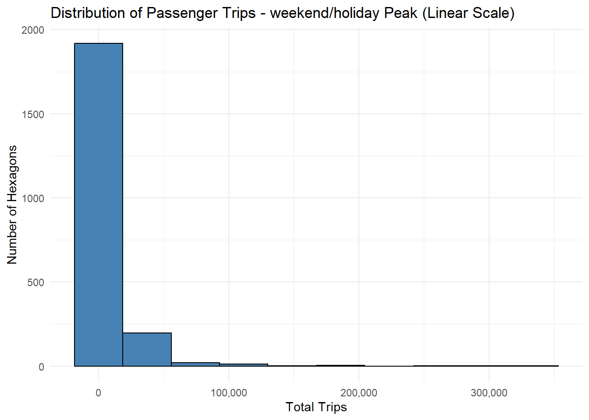

Install and Load R packages
pacman::p_load(sfdep, tmap, sf, knitr, httr, rvest, tidyverse)This exercise applies advanced geospatial statistical methods to analyze bus passenger mobility patterns across Singapore. By leveraging Local Measures of Spatial Association (LMSA) and Emerging Hot Spot Analysis (EHSA), we move beyond simple mapping to identify where and how passenger demand clusters evolve over time. These insights can inform more responsive urban planning and public transport service optimization.
Urban mobility patterns reveal how cities function and evolve. This exercise analyzes bus passenger boarding patterns across Singapore using advanced geospatial statistical methods. By applying Local Measures of Spatial Association (LMSA) and Emerging Hot Spot Analysis (EHSA), we identify where passenger demand clusters are located and how they evolve over time during different periods of the week.
Identify spatial clustering patterns in bus passenger boarding volumes across Singapore’s hexagonal traffic analysis zones using Local Moran’s I, Local Geary’s C, and Getis-Ord Gi* statistics.
Detect emerging mobility trends by analyzing how passenger demand hotspots evolve over time – whether they are new, intensifying, diminishing, or sporadic.
Compare mobility patterns across weekday morning peak, weekday afternoon peak, and weekend/holiday periods.
Where are the spatial hotspots and coldspots of bus passenger boarding volumes during weekday morning peak, weekday afternoon peak, and weekend/holiday periods?
How do passenger boarding patterns differ spatially across neighborhoods and planning areas in Singapore?
Are there significant spatial outliers – locations with unusually high or low passenger volumes compared to their surroundings?
How are passenger demand hotspots evolving over time – are they new, intensifying, diminishing, or exhibiting sporadic patterns across the observed period?
What are the implications of these spatial and temporal patterns for public transport planning and urban mobility management?
| Dataset | Description | Source | Format |
|---|---|---|---|
| Passenger Volume by Origin Destination Bus Stops | Bus passenger tap-on/tap-off records for spatial-temporal mobility analysis | LTA DataMall | CSV |
| Bus Stop Location | Geospatial coordinates and identifiers for bus stops across Singapore | LTA DataMall | ESRI Shapefile |
| Master Plan 2019 Subzone Boundary (No Sea) | Planning area and subzone boundaries for spatial context | Data.gov.sg | ESRI Shapefile |
pacman::p_load(sfdep, tmap, sf, knitr, httr, rvest, tidyverse)mpsz <- read_rds("data/rds/mpsz_sf.rds")BusStop <- st_read(dsn = "data/geospatial/BusStopLocation_Aug2025",
layer = "BusStop") %>%
st_transform(crs = 3414)odbus <- read_csv("data/geospatial/origin_destination_bus_202508.csv")BusStop_in_SG <- st_join(
BusStop, mpsz,
join = st_within,
left = FALSE
)tm_shape(mpsz) +
tm_polygons() +
tm_shape(BusStop_in_SG) +
tm_dots()
hexagon <- st_make_grid(mpsz,
cellsize = 375,
what = "polygons",
square = FALSE) %>%
st_sf()| BUS_STOP_N | DAY_TYPE | HOUR_OF_DAY | TRIPS |
|---|---|---|---|
| 84671 | WEEKENDS/HOLIDAY | 9 | 3 |
| 10099 | WEEKENDS/HOLIDAY | 13 | 31 |
| 64601 | WEEKENDS/HOLIDAY | 21 | 3 |
| 53009 | WEEKENDS/HOLIDAY | 16 | 10 |
| 80051 | WEEKENDS/HOLIDAY | 18 | 4 |
| 70031 | WEEKDAY | 14 | 1 |
| BUS_STOP_N | HEX_ID | |
|---|---|---|
| 3092 | 25059 | H0398 |
| 2439 | 25751 | H0615 |
| 241 | 26379 | H0618 |
| 2258 | 26369 | H0619 |
| 2554 | 25761 | H0668 |
| 3611 | 26389 | H0671 |
trips <- inner_join(trips, bs_hex)
kable(head(trips))| BUS_STOP_N | DAY_TYPE | HOUR_OF_DAY | TRIPS | HEX_ID |
|---|---|---|---|---|
| 84671 | WEEKENDS/HOLIDAY | 9 | 3 | H10990 |
| 10099 | WEEKENDS/HOLIDAY | 13 | 31 | H6826 |
| 64601 | WEEKENDS/HOLIDAY | 21 | 3 | H9056 |
| 53009 | WEEKENDS/HOLIDAY | 16 | 10 | H7917 |
| 80051 | WEEKENDS/HOLIDAY | 18 | 4 | H8613 |
| 70031 | WEEKDAY | 14 | 1 | H8832 |
# Weekday Morning Peak: 6am-9am (hours 6, 7, 8)
# Weekday Afternoon Peak: 5pm-8pm (hours 17, 18, 19)
# Weekend/Holiday: 11am-8pm (hours 11-19)
trips <- trips %>%
mutate(TIME_PERIOD = case_when(
DAY_TYPE == "WEEKDAY" & HOUR_OF_DAY >= 6 & HOUR_OF_DAY <= 8 ~ "Weekday_Morning_Peak",
DAY_TYPE == "WEEKDAY" & HOUR_OF_DAY >= 17 & HOUR_OF_DAY <= 19 ~ "Weekday_Afternoon_Peak",
DAY_TYPE %in% c("WEEKENDS/HOLIDAY") & HOUR_OF_DAY >= 11 & HOUR_OF_DAY <= 19 ~ "Weekend_Holiday",
TRUE ~ "Other"
))
kable(head(trips))| BUS_STOP_N | DAY_TYPE | HOUR_OF_DAY | TRIPS | HEX_ID | TIME_PERIOD |
|---|---|---|---|---|---|
| 84671 | WEEKENDS/HOLIDAY | 9 | 3 | H10990 | Other |
| 10099 | WEEKENDS/HOLIDAY | 13 | 31 | H6826 | Weekend_Holiday |
| 64601 | WEEKENDS/HOLIDAY | 21 | 3 | H9056 | Other |
| 53009 | WEEKENDS/HOLIDAY | 16 | 10 | H7917 | Weekend_Holiday |
| 80051 | WEEKENDS/HOLIDAY | 18 | 4 | H8613 | Weekend_Holiday |
| 70031 | WEEKDAY | 14 | 1 | H8832 | Other |
| HEX_ID | TIME_PERIOD | TOTAL_TRIPS |
|---|---|---|
| H0398 | Weekday_Afternoon_Peak | 849 |
| H0398 | Weekday_Morning_Peak | 308 |
| H0398 | Weekend_Holiday | 1237 |
| H0615 | Weekday_Afternoon_Peak | 45 |
| H0615 | Weekday_Morning_Peak | 26 |
| H0615 | Weekend_Holiday | 50 |
| H0618 | Weekday_Afternoon_Peak | 223 |
| H0618 | Weekday_Morning_Peak | 74 |
| H0618 | Weekend_Holiday | 159 |
| H0619 | Weekday_Afternoon_Peak | 221 |
trips_hex_wide <- trips_hex %>%
pivot_wider(names_from = TIME_PERIOD,
values_from = TOTAL_TRIPS,
values_fill = 0)
kable(head(trips_hex_wide))| HEX_ID | Weekday_Afternoon_Peak | Weekday_Morning_Peak | Weekend_Holiday |
|---|---|---|---|
| H0398 | 849 | 308 | 1237 |
| H0615 | 45 | 26 | 50 |
| H0618 | 223 | 74 | 159 |
| H0619 | 221 | 78 | 194 |
| H0668 | 736 | 193 | 407 |
| H0671 | 398 | 67 | 276 |
| HEX_ID | Weekday_Afternoon_Peak | Weekday_Morning_Peak | Weekend_Holiday | geometry |
|---|---|---|---|---|
| H0001 | 0 | 0 | 0 | POLYGON ((2480.038 15856.97… |
| H0002 | 0 | 0 | 0 | POLYGON ((2480.038 16506.49… |
| H0003 | 0 | 0 | 0 | POLYGON ((2480.038 17156.01… |
| H0004 | 0 | 0 | 0 | POLYGON ((2480.038 17805.53… |
| H0005 | 0 | 0 | 0 | POLYGON ((2480.038 18455.05… |
| H0006 | 0 | 0 | 0 | POLYGON ((2480.038 19104.57… |
summary_stats <- trips_hex %>%
group_by(TIME_PERIOD) %>%
summarise(
Min = min(TOTAL_TRIPS),
Q1 = quantile(TOTAL_TRIPS, 0.25),
Median = median(TOTAL_TRIPS),
Mean = mean(TOTAL_TRIPS),
Q3 = quantile(TOTAL_TRIPS, 0.75),
Max = max(TOTAL_TRIPS),
SD = sd(TOTAL_TRIPS),
Total_Hexagons = n()
)
kable(summary_stats)| TIME_PERIOD | Min | Q1 | Median | Mean | Q3 | Max | SD | Total_Hexagons |
|---|---|---|---|---|---|---|---|---|
| Weekday_Afternoon_Peak | 1 | 1549.50 | 4434 | 9769.810 | 10080.5 | 467963 | 22545.26 | 2139 |
| Weekday_Morning_Peak | 1 | 657.50 | 4271 | 9709.962 | 12505.0 | 288060 | 16542.43 | 2135 |
| Weekend_Holiday | 2 | 961.75 | 3932 | 8952.446 | 10144.5 | 334516 | 18845.34 | 2152 |
hexagon_trips_filtered <- hexagon_trips %>%
filter(Weekday_Morning_Peak > 0 |
Weekday_Afternoon_Peak > 0 |
Weekend_Holiday > 0)# Calculate common quantile breaks across all three periods
all_trips <- c(hexagon_trips_filtered$Weekday_Morning_Peak,
hexagon_trips_filtered$Weekday_Afternoon_Peak,
hexagon_trips_filtered$Weekend_Holiday)
common_breaks <- quantile(all_trips,
probs = seq(0, 1, length.out = 7),
na.rm = TRUE)
print("Common breaks for all three periods:")[1] "Common breaks for all three periods:"print(common_breaks) 0% 16.66667% 33.33333% 50% 66.66667% 83.33333% 100%
0 465 1809 4167 7933 15153 467963 summary(hexagon_trips_filtered$Weekday_Morning_Peak) Min. 1st Qu. Median Mean 3rd Qu. Max.
0.0 601.5 4159.0 9619.8 12367.0 288060.0 ggplot(data = hexagon_trips_filtered,
aes(x = Weekday_Morning_Peak)) +
geom_histogram(bins = 10,
fill = "steelblue",
color = "black") +
scale_x_continuous(labels = scales::comma) +
labs(title = "Distribution of Passenger Trips - Weekday Morning Peak (Linear Scale)",
x = "Total Trips",
y = "Number of Hexagons") +
theme_minimal()
ggplot(data = hexagon_trips_filtered %>% filter(Weekday_Morning_Peak > 0),
aes(x = Weekday_Morning_Peak)) +
geom_histogram(bins = 30,
fill = "steelblue",
color = "black") +
scale_x_log10(labels = scales::comma) +
labs(title = "Distribution of Passenger Trips - Weekday Morning Peak (Log Scale)",
x = "Total Trips (log scale)",
y = "Number of Hexagons") +
theme_minimal()
The distribution is heavily right-skewed, with most hexagons (approximately 1,800) generating fewer than 50,000 trips during morning peak hours. This reveals significant spatial inequality in demand: while the majority of active hexagons serve moderate passenger volumes, a small number of critical nodes experience exceptionally high boarding activity exceeding 100,000 trips. This concentration suggests opportunities for targeted capacity planning in high-demand corridors.
tm_shape(mpsz) +
tm_polygons(col = "lightgrey", border.col = "white") +
tm_shape(hexagon_trips_filtered) +
tm_fill(col = "Weekday_Morning_Peak",
palette = "YlOrRd",
breaks = common_breaks,
title = "Total Trips") +
tm_borders(alpha = 0.3) +
tm_layout(main.title = "Passenger Trips by Origin - Weekday Morning Peak (6am-9am)",
main.title.size = 1,
legend.outside = TRUE)
The spatial distribution of weekday morning peak passenger trips reveals distinct clustering patterns across Singapore. High-intensity boarding activity (dark red hexagons) is concentrated in several key areas: the Central Business District (CBD) and surrounding central regions, major residential estates in the north and northeastern areas, and established HDB townships in the western part of Singapore. These patterns reflect typical morning commute behavior, where passengers board buses from residential neighborhoods heading toward employment centers.
Notable spatial heterogeneity is evident, with mid-to-high trip generation hexagons (orange to red) forming contiguous clusters, suggesting neighborhood-level demand patterns rather than isolated hotspots. The eastern and northeastern regions show moderate activity levels, while certain peripheral areas display lower boarding volumes.
The quantile classification reveals that the top 20% of hexagons (darkest red) handle significantly higher passenger volumes (18,337 to 288,060 trips), indicating substantial spatial inequality in bus service demand. This concentration suggests that targeted service planning focusing on these high-demand corridors could efficiently serve a large proportion of morning peak passengers. The spatial continuity of medium-to-high demand areas also indicates potential for effective trunk-and-feeder route optimization.
summary(hexagon_trips_filtered$Weekday_Afternoon_Peak) Min. 1st Qu. Median Mean 3rd Qu. Max.
0 1498 4314 9697 10044 467963 ggplot(data = hexagon_trips_filtered,
aes(x = Weekday_Afternoon_Peak)) +
geom_histogram(bins = 10,
fill = "steelblue",
color = "black") +
scale_x_continuous(labels = scales::comma) +
labs(title = "Distribution of Passenger Trips - Weekday Afternoon Peak (Linear Scale)",
x = "Total Trips",
y = "Number of Hexagons") +
theme_minimal()
ggplot(data = hexagon_trips_filtered %>% filter(Weekday_Afternoon_Peak > 0),
aes(x = Weekday_Afternoon_Peak)) +
geom_histogram(bins = 30,
fill = "coral",
color = "black") +
scale_x_log10(labels = scales::comma) +
labs(title = "Distribution of Passenger Trips - Weekday Afternoon Peak (Log Scale)",
x = "Total Trips (log scale)",
y = "Number of Hexagons") +
theme_minimal()
The afternoon peak distribution differs significantly from morning peak. Morning shows a broader, flatter distribution with trip volumes spreading relatively evenly from 1,000 to 10,000+ trips. In contrast, afternoon exhibits a more concentrated, bell-shaped pattern with a sharp peak around 2,000-3,000 trips and a steeper drop-off. The afternoon distribution has fewer hexagons with extremely high trip volumes (10,000+), while morning has a longer right tail indicating more hexagons with very high boarding activity. This suggests more uniformity in afternoon trip generation across hexagons compared to morning’s greater variation in activity levels.
tm_shape(mpsz) +
tm_polygons(col = "lightgrey", border.col = "white") +
tm_shape(hexagon_trips_filtered) +
tm_fill(col = "Weekday_Afternoon_Peak",
palette = "YlOrRd",
breaks = common_breaks,
title = "Total Trips") +
tm_borders(alpha = 0.3) +
tm_layout(main.title = "Passenger Trips by Origin - Weekday Afternoon Peak (5pm-8pm)",
main.title.size = 1,
legend.outside = TRUE)
The afternoon peak spatial distribution displays high-intensity boarding activity across multiple areas of Singapore, with dark red hexagons visible in the central region and various other locations across the island. The pattern shows widespread moderate-to-high activity (orange to red) across much of the developed area.
While the histogram revealed some differences in trip volume distribution between morning and afternoon peaks, the spatial maps show broadly similar geographic patterns. Both periods exhibit high-activity hexagons distributed across various regions rather than concentrated in a single area. The afternoon peak maintains substantial boarding activity across multiple zones, similar to the morning pattern, though the specific intensity levels at individual hexagons may vary between the two periods.
summary(hexagon_trips_filtered$Weekend_Holiday) Min. 1st Qu. Median Mean 3rd Qu. Max.
0 952 3927 8940 10132 334516 ggplot(data = hexagon_trips_filtered,
aes(x = Weekend_Holiday)) +
geom_histogram(bins = 10,
fill = "steelblue",
color = "black") +
scale_x_continuous(labels = scales::comma) +
labs(title = "Distribution of Passenger Trips - weekend/holiday Peak (Linear Scale)",
x = "Total Trips",
y = "Number of Hexagons") +
theme_minimal()
The linear scale histogram shows extreme right-skew similar to weekday patterns, with approximately 1,900+ hexagons concentrated in the low trip range (0-50,000 trips). Only a small number of hexagons exceed 50,000 trips, with the maximum reaching around 100,000-150,000 trips, lower than weekday morning peak’s maximum of nearly 300,000 trips.
ggplot(data = hexagon_trips_filtered %>% filter(Weekend_Holiday > 0),
aes(x = Weekend_Holiday)) +
geom_histogram(bins = 30,
fill = "mediumseagreen",
color = "black") +
scale_x_log10(labels = scales::comma) +
labs(title = "Distribution of Passenger Trips - Weekend/Holiday (Log Scale)",
x = "Total Trips (log scale)",
y = "Number of Hexagons") +
theme_minimal()
On log scale, the weekend/holiday distribution displays a bell-shaped pattern with peak around 2,000-4,000 trips. The distribution appears more symmetric and concentrated compared to weekday morning’s flatter spread, but similar to weekday afternoon’s bell-shaped form. The right tail extends to approximately 100,000 trips, indicating fewer extreme high-volume hexagons than weekday peaks.
tm_shape(mpsz) +
tm_polygons(col = "lightgrey", border.col = "white") +
tm_shape(hexagon_trips_filtered) +
tm_fill(col = "Weekend_Holiday",
palette = "YlOrRd",
breaks = common_breaks,
title = "Total Trips") +
tm_borders(alpha = 0.3) +
tm_layout(main.title = "Passenger Trips by Origin - Weekend/Holiday (11am-8pm)",
main.title.size = 1,
legend.outside = TRUE)
The weekend/holiday spatial pattern shows high-intensity boarding activity (dark red hexagons) distributed across multiple regions of Singapore, similar to weekday patterns. Red and orange hexagons are visible in central, northern, western, and eastern areas. The overall spatial distribution appears comparable to both weekday morning and afternoon peaks, with moderate-to-high activity spread across developed areas rather than showing a distinctly different geographic pattern.
trips_comparison <- hexagon_trips_filtered %>%
st_drop_geometry() %>%
summarise(
Weekday_Morning_Total = sum(Weekday_Morning_Peak, na.rm = TRUE),
Weekday_Morning_Mean = mean(Weekday_Morning_Peak, na.rm = TRUE),
Weekday_Morning_Median = median(Weekday_Morning_Peak, na.rm = TRUE),
Weekday_Afternoon_Total = sum(Weekday_Afternoon_Peak, na.rm = TRUE),
Weekday_Afternoon_Mean = mean(Weekday_Afternoon_Peak, na.rm = TRUE),
Weekday_Afternoon_Median = median(Weekday_Afternoon_Peak, na.rm = TRUE),
Weekend_Holiday_Total = sum(Weekend_Holiday, na.rm = TRUE),
Weekend_Holiday_Mean = mean(Weekend_Holiday, na.rm = TRUE),
Weekend_Holiday_Median = median(Weekend_Holiday, na.rm = TRUE)
) %>%
pivot_longer(everything(),
names_to = c("Period", ".value"),
names_pattern = "(.+)_(Total|Mean|Median)") %>%
mutate(Period = str_replace_all(Period, "_", " "))
kable(trips_comparison,
digits = 0,
caption = "Comparison of Trip Volumes Across Time Periods")| Period | Total | Mean | Median |
|---|---|---|---|
| Weekday Morning | 20730768 | 9620 | 4159 |
| Weekday Afternoon | 20897624 | 9697 | 4314 |
| Weekend Holiday | 19265664 | 8940 | 3927 |
The summary statistics reveal similar overall trip volumes across the three time periods. Weekday morning peak records the highest total trips (20,730,768) and mean per hexagon (9,620), followed closely by weekday afternoon peak (20,897,621 total; 9,697 mean). Weekend/holiday shows slightly lower volumes (19,265,664 total; 8,940 mean).
The median values are notably consistent across all periods (4,159 for morning, 4,314 for afternoon, 3,927 for weekend), suggesting comparable central tendencies despite differences in distribution shapes observed in the histograms.
trips_boxplot <- hexagon_trips_filtered %>%
st_drop_geometry() %>%
select(Weekday_Morning_Peak, Weekday_Afternoon_Peak, Weekend_Holiday) %>%
pivot_longer(everything(),
names_to = "TIME_PERIOD",
values_to = "TOTAL_TRIPS") %>%
filter(TOTAL_TRIPS > 0) %>%
mutate(TIME_PERIOD = factor(TIME_PERIOD,
levels = c("Weekday_Morning_Peak",
"Weekday_Afternoon_Peak",
"Weekend_Holiday"),
labels = c("Weekday\nMorning Peak",
"Weekday\nAfternoon Peak",
"Weekend/\nHoliday")))ggplot(data = trips_boxplot,
aes(x = TIME_PERIOD, y = TOTAL_TRIPS, fill = TIME_PERIOD)) +
geom_boxplot() +
scale_y_log10(labels = scales::comma) +
scale_fill_manual(values = c("steelblue", "coral", "mediumseagreen")) +
labs(title = "Comparison of Trip Distribution Across Time Periods",
x = "Time Period",
y = "Total Trips (log scale)") +
theme_minimal() +
theme(legend.position = "none",
axis.text.x = element_text(size = 10))
The box plots reveal similar distributions across all three time periods on log scale. All three periods show comparable median values (horizontal lines within boxes around 2,000-4,000 trips) and interquartile ranges (box heights). Each period displays numerous outliers above the upper whisker, with weekday afternoon peak showing the most prominent extreme outliers exceeding 100,000 trips. The weekend/holiday distribution has a slightly lower median and narrower interquartile range compared to weekday peaks.
Overall, the three distributions are remarkably similar in shape and spread, with the main differences appearing in the frequency and magnitude of extreme high-value outliers rather than in the typical hexagon’s trip volume.